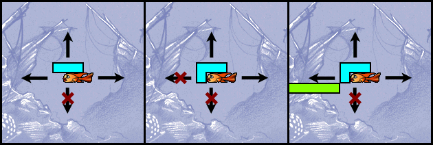
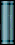
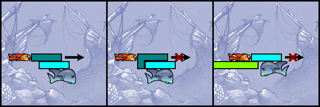
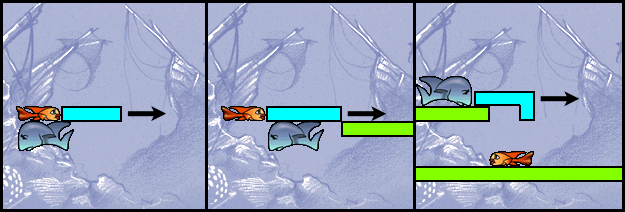

Fish Fillets - Next Generation |
При стартиране на играта се показва карта на подводното царство с една или няколко пътеки. Картата показва вече преминатите нива (златни мъниста), нива, които трябва да се преминат в момента (пулсиращите сини мъниста) и още неразкрити нива (празни кръгчета).
Нивата се преминават едно след друго. Не можете да прескочите пулсиращото мънисто. Трябва да го преминете за да стигнете до следващото ниво.
Пулсиращото ниво се стартира като го изберете с мишката. Ако изберете вече преминато ще видите информация за най-доброто Ви постижение при преминаване на нивото. Имате възможност да изиграете нивото отново или да видите най-доброто си постижение на запис.
След стартиране на нивото можете да запишете (F2) или заредите (F3) текущото състояние на играта, както и да прекъснете (Escape) или започнете отначало (Backspace) нивото.
При записване на текущото положение трябва да имате предвид, че можете да запишете само една позиция за всяко ниво. При запис на нова позиция старата се изтрива без предупреждение. Препоръчва се да записвате само когато сте сигурни, че сте на прав път.
Други полезни клавиши за Помощ (F1), брояч на ходовете (F5), показване/скриване на надписите (F6), ускоряване на играта (задържане на Shift), показваме на менюто (F10) и режим Цял екран (F11).
Настройките на играта са в менюто, което се извиква с избиране на Options в долния десен ъгъл на картата на света или с клавиша F10. От менюто можете да регулирате силата на звуковите ефекти и фоновата музика, езика на надписите, както и да ги изключите.
Рибките могат да бъдат управлявани по три начина.
Стрелките нагоре, надолу, наляво и надясно управляват активната рибка. Клавишът интервал превключва активната рибка.
Когато рибката не иска да се движи, вероятно се опитвате да преместите обект, който не може да бъде преместен или се опитвате да преместите стоманен обект с малката рибка.
Ако задържите клавиша за движение, скоростта на рибката ще се увеличи след приблизително три квадратчета.
Посочете с мишката желаната позиция и задръжте левия бутон. Ако рибката може да стигне до посоченото място тя ще тръгне натам. След приблизително три квадратчета скоростта й ще се увеличи.
Ако искате да преместите обект, трябва да използвате десния бутон на мишката. Активната рибка ще тръгне към посочената позиция, премествайки обектите по пътя си.
Активната рибка се сменя с натискане на левия бутон на мишката върху нея.
Клавишите A, S, D и W управляват малката рибка, а J, K, L и I управляват голямата. Предимството на директния метод за управление е, че не се налага превключване на активната рибка.
Целта в повечето нива е да изведете и двете рибки навън. За да направите това трябва да премествате и подреждате различните обекти в нивото. Трябва да сте много внимателни, защото рибките са много нежни и лесно умират. Вижте също Преместване на обекти.
Целта на играта е да се преминат всички нива.
В развитието на играта понякога ще се случва рибките Ви да загиват без видима причина. По-долу ще намерите общите правила, от които зависи животът на Вашите рибки.
Правила:Голямата рибка загива ако обект бъде преместен (освен ако е преместен нагоре) и въпросният обект в новото си положение се подпира само на рибката.
Голямата рибка загива също и ако обект се придвижи надолу и спре само в обект или група обекти, които се опират единствено на рибката.
Малката рибка загива при в случаите по-горе, както и ако стоманен обект или група обекти, включваща стоманен обект се опре единствено на рибката.
Ето и по-подробно обяснение:
Рибките са в опасност само когато обект бива преместван. Най-простата ситуация е при повдигане на обект - повдигането винаги е безопасно. Ако рибката на лявата картинка се премести нагоре, тя повдига обекта. Ако се премести наляво или надясно, нищо не се случва, а обектът остава на място. Ако рибката се премести достатъчно наляво или надясно ще излезе изпод обекта и обектът безопасно ще падне надолу. Единствената опасна посока е надолу. Ако рибката се премести надолу, обектът ще падне върху нея и ще я убие.
За да може рибка да бутне обект, той трябва да е подпрян на друг обект или структура. Рибката не може да подпира обекта, който бута. Рибката на средната картинка не може да се премести наляво, защото ще загине.
Рибка може да бутне неподдържан обект само ако в новото си положение обектът се подпира на нещо. Пример за такава ситуация се вижда на дясната картинка.
В някои нива ще забележите стоманени обекти. Стоманените обекти изглеждат като цилиндъра на картинката.  Стоманените обекти могат да бъдат преместени или повдигнати само от голямата рибка. Малката рибка не може да ги премества, а ако попадне под тях, тя ще загине дори и в ситуации, при които би оцеляла ако участват само не-стоманени обекти.
Рибките могат да си прехвърлят обекти една на друга. Ако едната рибка подпира даден обект и другата се премести в положение, в което обектът се подпира и на нея, то първата рибка може да се премести без да предизвика преместване на обекта. На лявата картинка всяка от рибката може да се премести, а обектът ще остане да се подпира на другата.
Внимавайте да не прехвърлите стоманен обект. В ситуацията на дясната картинка само малката рибка може да се премести.

Любимият трик на авторите на нивата е рибка да бута обект върху друг обект, който се поддържа не от другата рибка (което е невъзможно), а от обект, подпрян на другата рибка. Това е допустимо и е представено на лявата картинка.
Все пак трябва да внимавате да не преместите обект, който се подпира само на другата рибка. Малката рибка на средната картинка не може бутне обекта, защото това ще убие голямата. Тя може да бутне обекта с форма L само от обратната страна.
Недопустимо е също обект да бъде избутан върху другата рибка, както е показано на дясната картинка.
Падащите обекти са смъртоносни. Няма значение от колко високо падат. Ако ударят рибка или обект, който се подпира върху рибка, рибката умира.
Обект, поддържан от рибка може да бъде избутан само ако преместването му предизвика падане или след преместването обектът не се подпира на рибката, а на друг обект. Това е показано на лявата и средната картинки.
Интересна е ситуацията, при която изглежда, че падащият обект се удря в рибка, но всъщност се подпира на структура. В такава ситуация рибката е в безопасност, въпреки, че не изглежда съвсем така. Пример за такава ситуация е на дясната картинка.
Някои от обектите в играта съдържат анимации - октопод свири на балалайка, танцуващи анемони, викинги си бъбрят и т.н. Всички тези ефекти присъстват само за да направят играта по-жива и нямат отношение към преминаването на нивото. В играта има само два вида обекти - нормални и стоманени. Обектите не си взаимодействат. Няма значение на какво приличат обектите - всички те заемат някакъв брой квадратчета от игралното поле и само това е от значение.